Photography — Personal Project — Paris, March 2026
Arianna has been living in Paris
since September. I came to see
what that looks like.
She has a flat somewhere between the 9th and the 18th. There are shoes by the door — Salomon trail runners, which feel slightly wrong for Paris and completely right for her. She studies on the sofa with her laptop on her knees. She knows which boulangerie opens first.
I was there for three days in March 2026. This is what I photographed.
The story starts inside. Shoes by the door, laptop on the sofa, the particular light of a Parisian flat in early March. This is where she lives now.
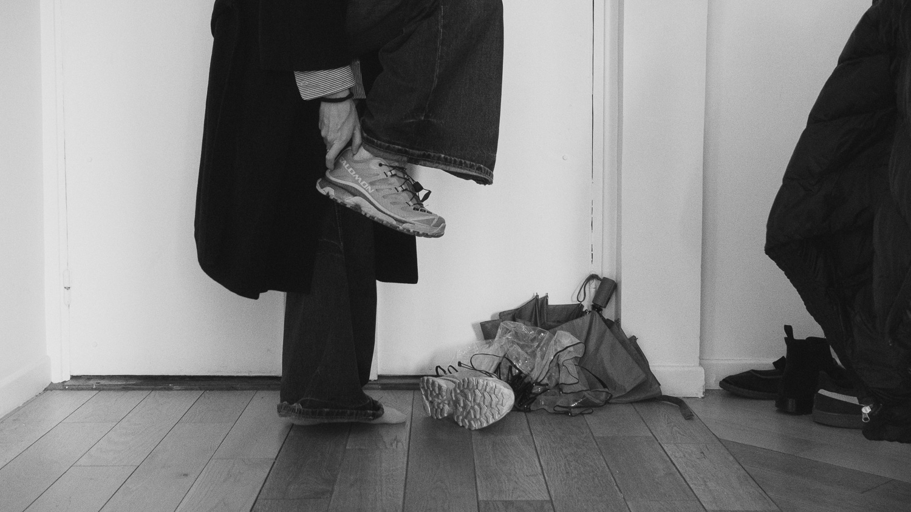
Erasmus is mostly
a sofa, a laptop, and
a city outside the window.
Her building has a spiral staircase. Of course it does — it's Paris. We leave every morning like we're descending into something.
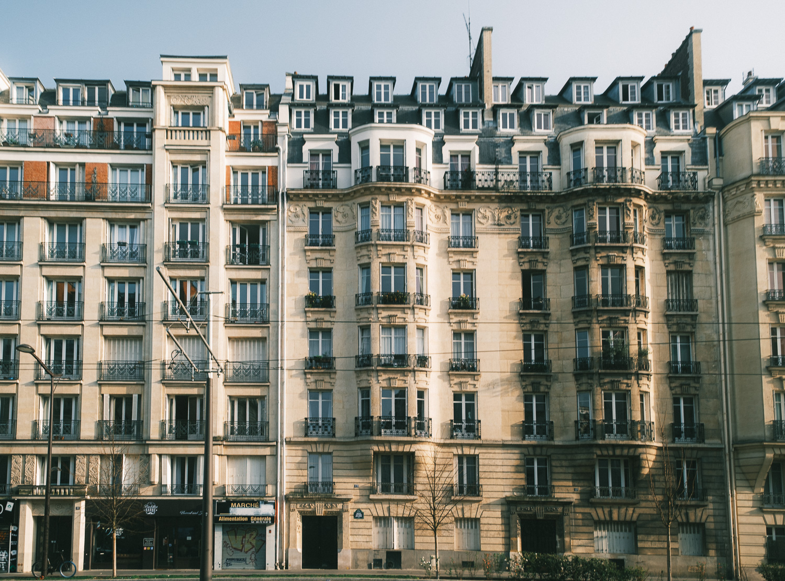
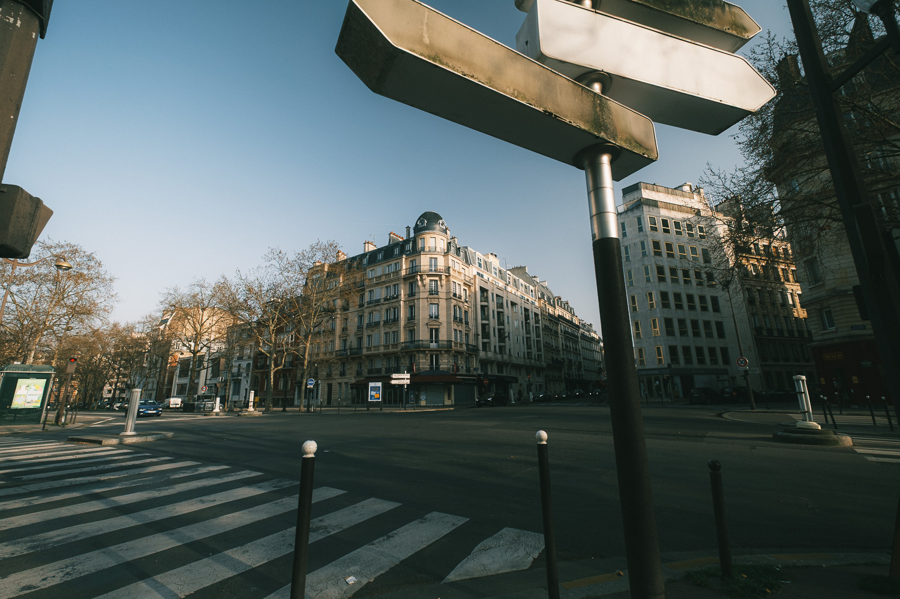
She's been here two months. She knows which streets to avoid and which ones to take on purpose. Montmartre is one of her places — she walks it like someone who has already stopped being a tourist.
I followed her up the stairs with my camera. She didn't wait for me.
Montmartre — Rue Lepic area
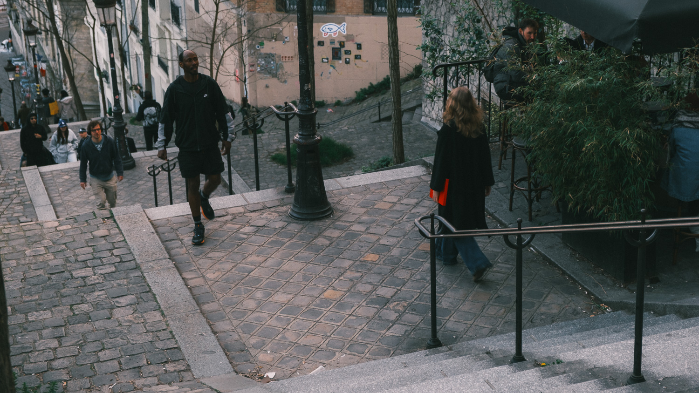
She bought it at the bouquinistes along the Seine. Used books, 2€ each, and a notebook she didn't need but couldn't leave behind. She carried it the rest of the day.
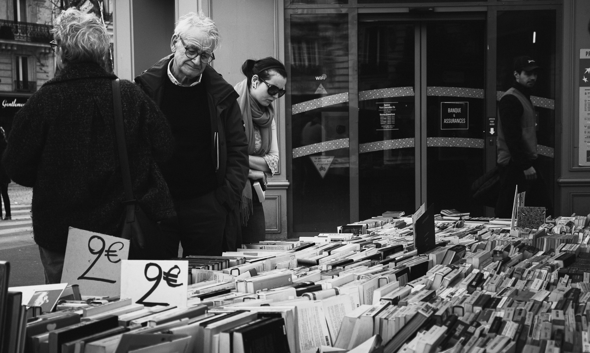
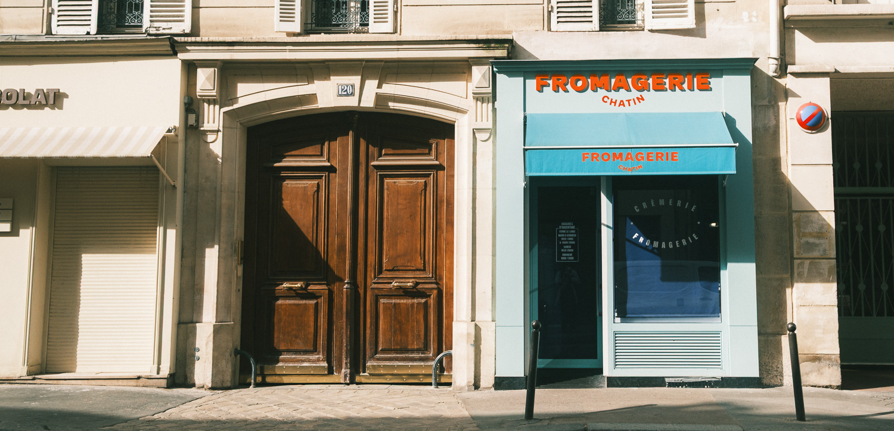
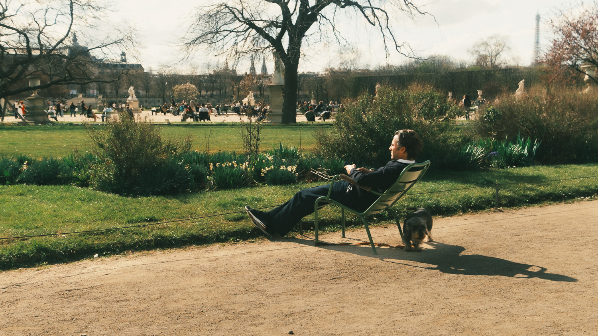
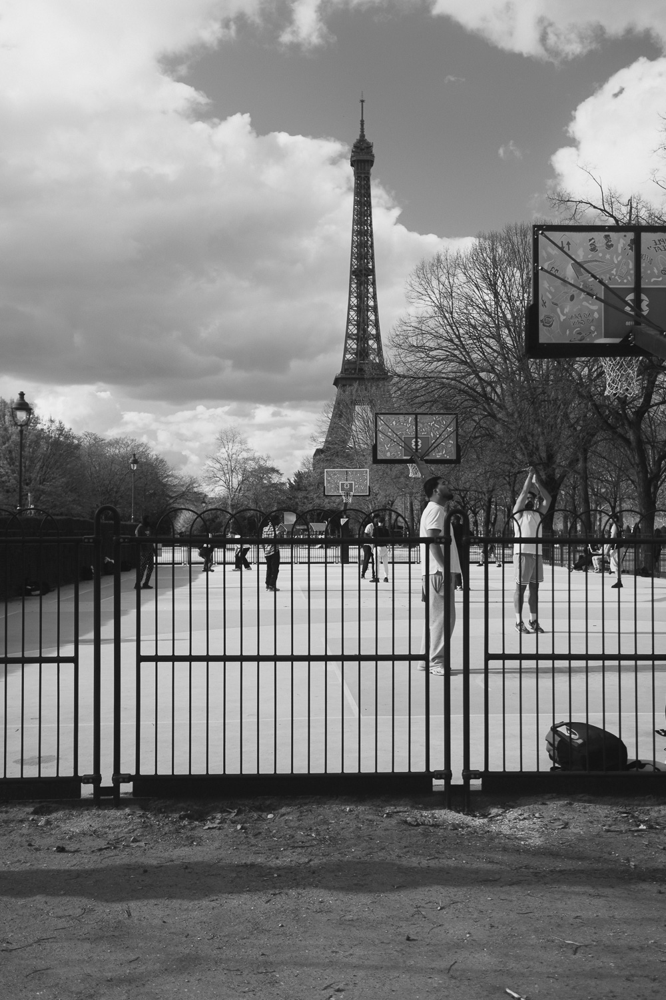
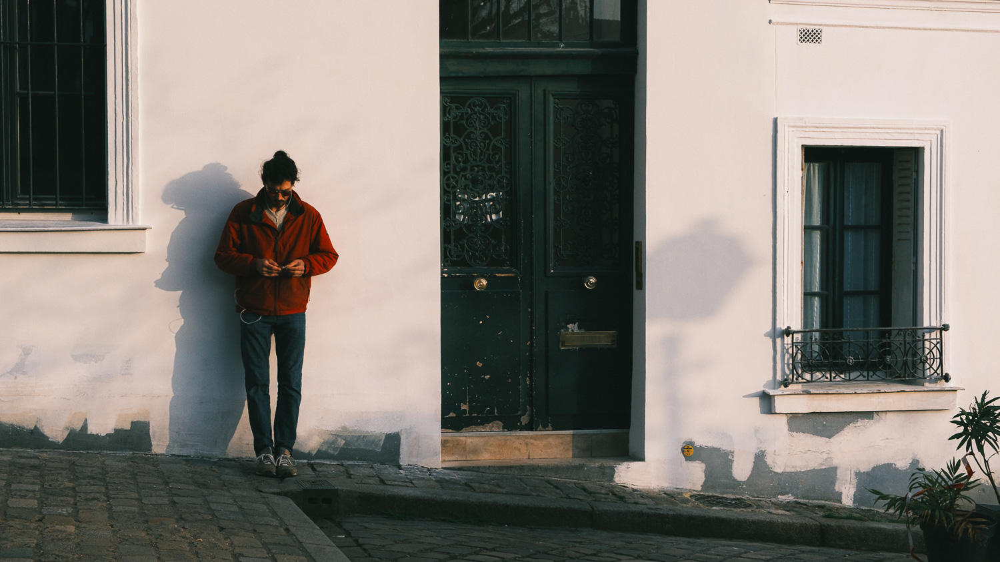
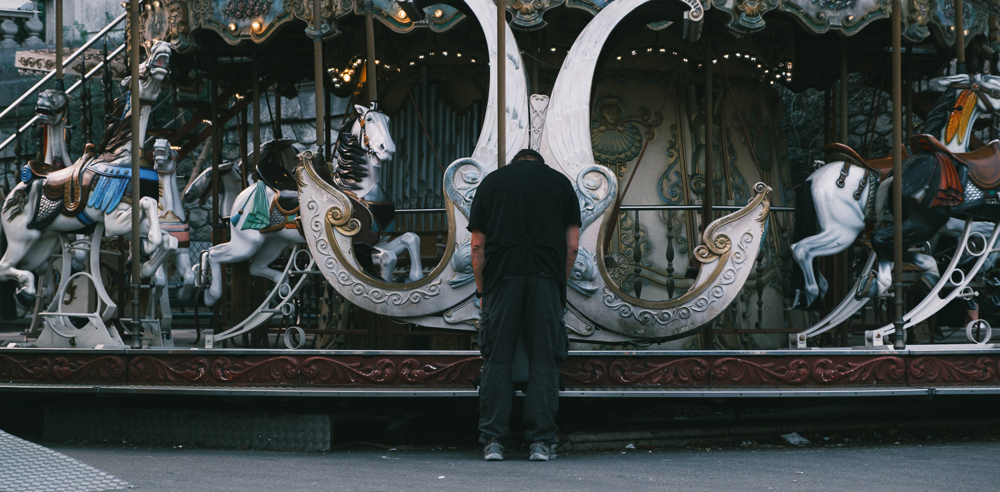
She said she bought it
because the cover was red.
That was enough of a reason.
We stayed out late. She still had the notebook. The streets were louder. The light was different. She moved like she owned the place — because at this point, she kind of did.
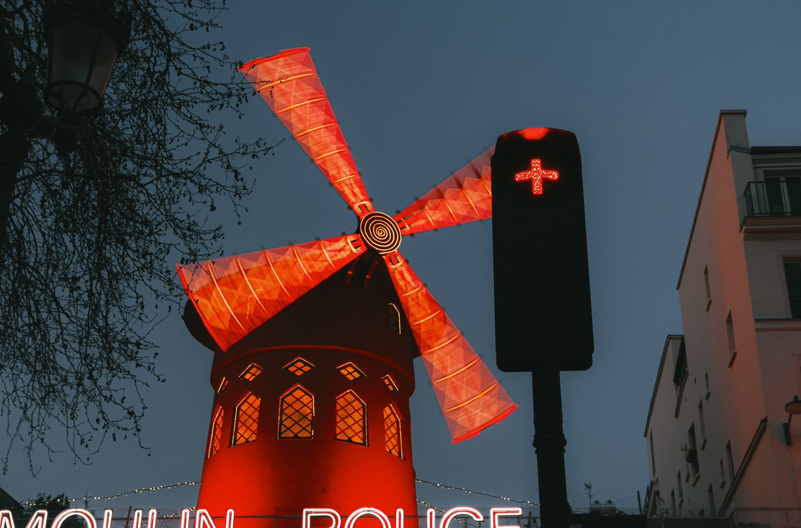
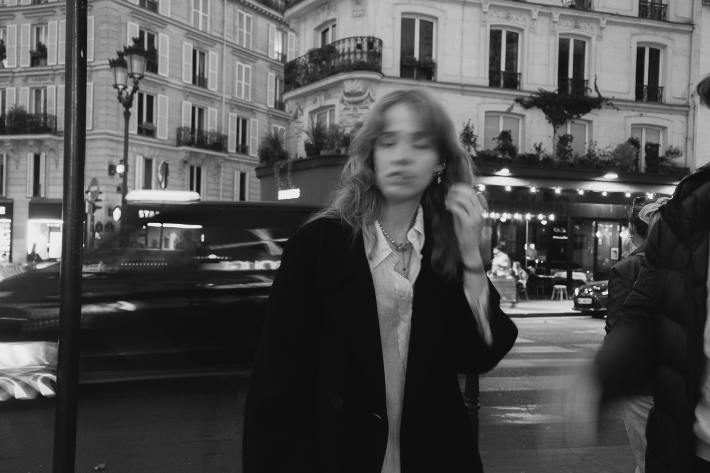
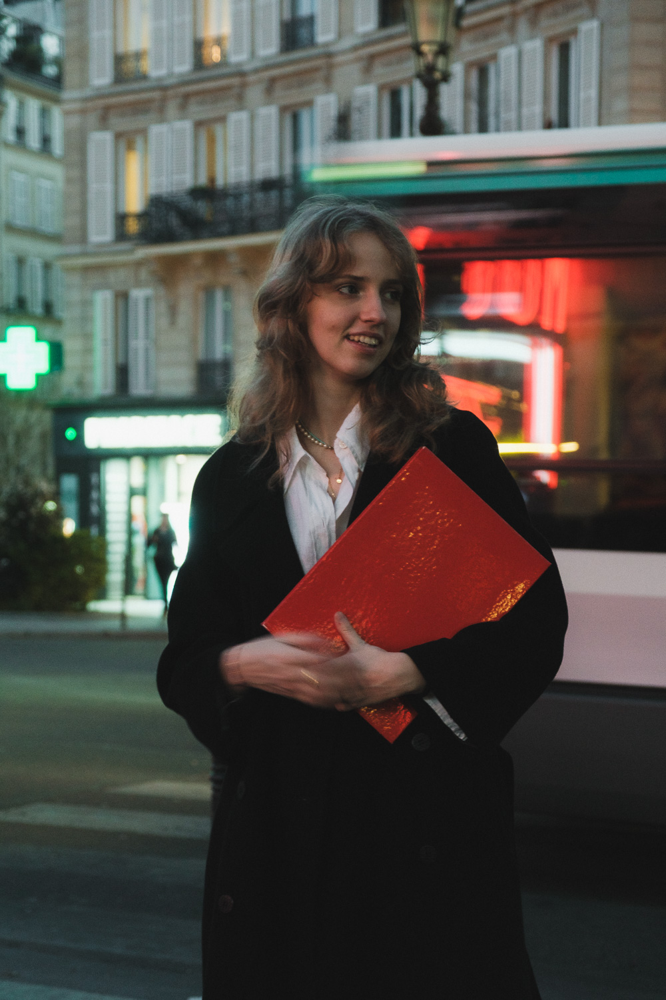
On the last day we went to the Trocadéro. Then I went alone to the Louvre and did the thing you do at the Louvre. She stayed home. She's already been.
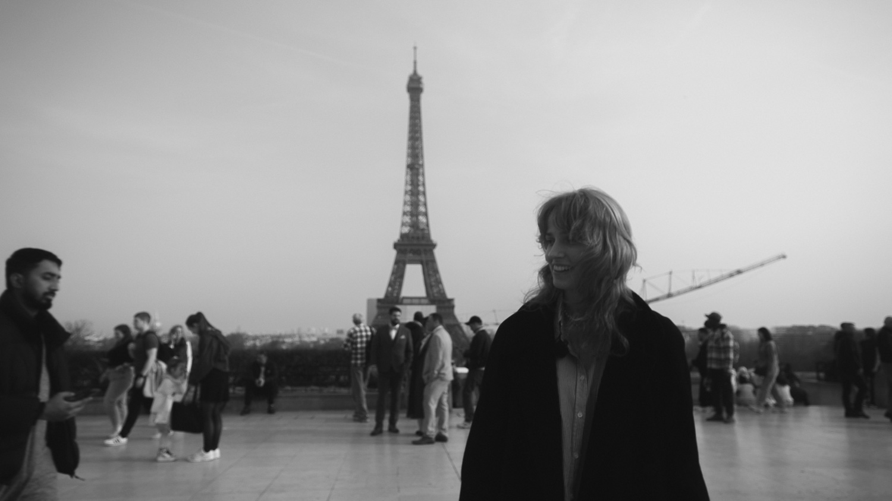
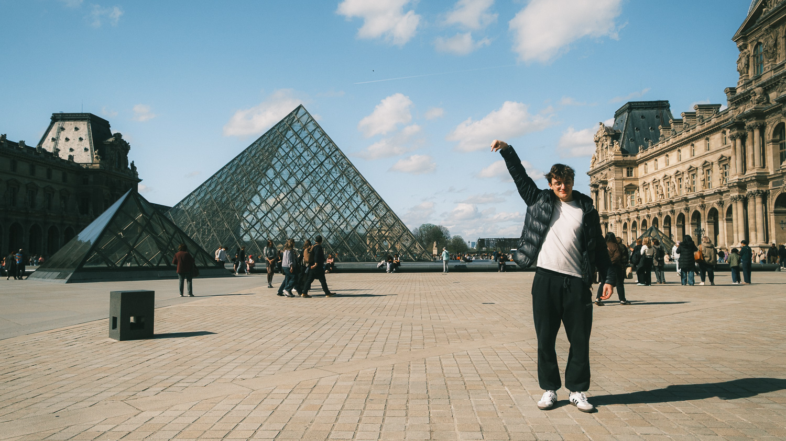
She's been there six months.
I was there three days.
She showed me everything.
I still feel like I missed half.